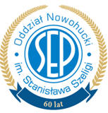

Oddział Nowohucki SEP im. mgr inż. Stanisława Szeligi
Stowarzyszenie Elektryków Polskich (SEP) jest największą pozarządową organizacją naukowo-techniczną w Polsce, o charakterze naukowo-technicznym działającą na rzecz użyteczności społecznej i publicznej. Celem działającego od 1919 roku Stowarzyszenia jest propagowanie wykorzystywania elektryczności dla wspomagania rozwoju gospodarczego kraju, inicjowanie i popieranie twórczości naukowej i technicznej we wszystkich dziedzinach elektryki i dziedzinach pokrewnych, oraz popularyzowanie elektryki, jej historii i szczególnie polskich jej twórców.
Nasz Oddział Nowohucki SEP, już z nieomal 65-cio letnią tradycją, współpracuje z Oddziałem Krakowskim SEP i Małopolską Okręgową Izbą Inżynierów Budownictwa oraz wieloma firmami regionu krakowskiego, zrzesza grupę techników i inżynierów elektrotechników, automatyków, energetyków, wysokiej klasy specjalistów o wspólnych zainteresowaniach i wspólnych celach.
Stowarzyszenie nasze realizując cele statutowe nie zapomina, że jest organizacją przyjaciół stwarzającą atmosferę ułatwiającej integrację elektryków i energetyków, wywodzących się z różnych środowisk technicznych miasta - regionu.
Jakie są początki ogólnopolskiej organizacji technicznej ?
W krótkim zarysie należy stwierdzić, że XVIII wiek to początek ery elektryczności. W 1784r. uważany
za pierwszego polskiego elektryka, ksiądz Józef Herman Osiński (1732-1802) wydał w Polsce pierwszą
książkę z elektrotechniki p.t. „Sposób ubezpieczający życie i majątki od piorunów”, za którą
otrzymał złoty medal od króla Stanisława Augusta.
Z satysfakcją możemy powiedzieć, że jako elektrycy mamy ponad 200 letnią historię i 100-letnią historię stowarzyszenia, gdyż Zjazd założycielski Stowarzyszenia Elektrotechników Polskich (a od 1928 roku Elektryków Polskich) miał miejsce w czerwcu 1919 roku.
Mijające lata XXI wieku wskazują na to, że ten wiek przynosi dalszy wzrost znaczenia szeroko rozumianej elektryki i kształtowania się nowej formy współczesnej cywilizacji jakim jest społeczeństwo informacyjne. XXXIII Walny Zjazd Delegatów odbył się w Łodzi w czerwcu 2006 pod hasłem „Przyszłość nauki i techniki - w elektryce”, w swojej uchwale generalnej określono główne wyzwanie dla naszego stowarzyszenia - aktywny udział wszystkich członków SEP w procesie dostosowywania gospodarki polskiej do wymagań wynikających z członkostwa Polski w Unii Europejskiej (1.05.2004 r.) jak i z zagwarantowania rozwoju gospodarki opartej na wiedzy. W czerwcu 2010 roku odbył się XXXV Walny Zjazd Delegatów w Katowicach pod hasłem zjazdowym „ELEKTRYKA dla przyszłości”. W czerwcu 2014 roku obradował w Szczecinie XXXVI Walny Zjazd Delegatów pod hasłem „Wspólne działanie gwarancją rozwoju elektryki”, który w swej uchwale generalnej wyraził zaniepokojenie postępującą od wielu lat likwidacją wielu zakładów przemysłu elektrotechnicznego, elektronicznego i telekomunikacyjnego, oraz ograniczeniem roli ośrodków naukowo-badawczych. W dniach 21-24 czerwca 2018 roku obradował w Poznaniu XXXVIII Walny Zjazd Delegatów pod hasłem „ELEKTRYKA EDUKACJA PRZEMYSŁ”.
Delegaci wybrali na kolejną, czteroletnią kadencję, nowe władze Stowarzyszenia. Funkcję Prezesa SEP powierzono ponownie dr inż. Piotrowi Szymczakowi. Zjazd przyjął Uchwałę Programową, w której określono kierunki dalszego działania SEP. Podkreślono również konieczność udziału wszystkich członków i ogniw SEP w obchodach jubileuszu 100-lecia Stowarzyszenia w 2019 r.